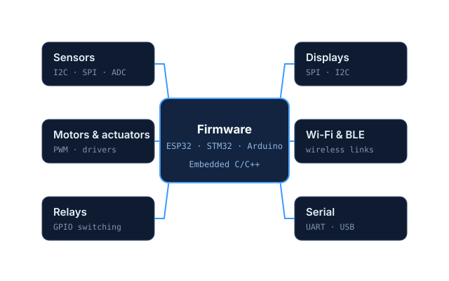

01
Explore this service
Embedded Firmware Development
I write the firmware that makes your product behave as intended: microcontroller programming in Embedded C/C++ on ESP32, STM32 and Arduino, with sensors, actuators, displays and wireless links integrated and debugged.
Deliverables
- Firmware source code
- Wiring diagram
- Testing documentation
Capabilities
- Sensors
- Motors & relays
- Displays
- Wi-Fi
- BLE
- UART · SPI · I2C